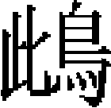

成宗下
三年春正月癸未朔，暹國、羅斛國及没剌由諸番來貢方物。賜暹世子虎符。庚寅，遣使問民疾苦。除本年内郡包銀、俸鈔。免江南夏税十之三。增小吏俸。置各路惠民局。封藥木忽兒爲定遠王。辛卯，命御史臺鞫浙西廉訪使王遇贓罪。壬辰，杖流高麗藩臣趙仁規於安西，崔冲紹於鞏昌。工部尚書也先帖木兒、翰林待制賈汝舟齎詔諭高麗王王昛，「自今命官有罪，毋輒行殺戮」。癸巳，哈剌哈孫爲中書左丞相。是月，詔中外軍官奥魯官撫養軍人，不得妄有科配。置各路管民官。招誘新附軍人逃竄者，限百日内出首免罪。
二月癸丑朔，車駕幸柳林。丁巳，罷四川、福建等處行中書省，陝西行御史臺，江東、荆南、淮西三道宣慰司，立四川、福建宣慰司都元帥府，陝西漢中道肅政廉訪司。壬申，加號解州鹽池神惠康王曰廣濟，資寶王曰永澤，泉州海神曰護國庇民明著天妃，鹽官州海神曰靈感宏祐公，吴大夫伍員曰忠孝威惠顯聖王。金齒蠻來貢方物。庚辰，車駕幸上都。
三月癸巳，緬國世子信合八的奉表來謝，賜衣遣之。補陀僧一山齎詔使日本，諭以通好息民之意，日本人不報。甲午，命何榮祖等更定律令。
夏四月庚午，申嚴江浙、兩淮私鹽之禁。己卯，禮部尚書月古不花爲中書左丞。
五月丙申，海南速古臺諸番來貢方物。庚子，復立征東行中書省，闊里吉思爲平章政事，耶律希逸爲左丞。
六月癸丑，罷大名路黄河故道田租。
秋七月丙申，淮安等縣蝗，在地者爲鶖啄食，飛者鶖擊殺之。詔禁捕鶖，著爲令。
八月己酉朔，日應食不食。
九月癸未，車駕幸古栅，受諸王、百官賀聖誕。癸巳，罷括江南手號軍。己亥，車駕至自上都。
冬十月戊申朔，有事於太廟。壬子，册立伯牙吾氏爲皇后。甲寅，復立海北海南道肅政廉訪司。
十一月戊子，釋罪囚二十人。
十二月癸酉，禁捕天鵝、

。四年春正月辛丑，詔蒙古都元帥也速帶兒勿擅決重刑。癸卯，復淮東漕渠。
二月丁未朔，日有食之。丙辰，皇太后崩。甲戌，罷稱海屯田，改置於阿札之地。乙亥，車駕幸上都。置西京太和嶺屯田。丙子，命李庭提調諸衛屯田。
夏四月丙辰，置五條河屯田。丁巳，緬國遣使進白象。戊午，中書省斷事官不蘭奚爲中書平章政事。
五月癸未，諭集賢大學士阿魯渾撒里等曰：「集賢、翰林乃養老之地，自今滿秩者遷官，勿令輒去。」
六月己酉，立緬國王子窟麻剌哥撒八爲緬國王。壬子，高麗國王王昛來朝。丙辰，太傅月赤察兒爲太師，中書右丞相完澤爲太傅。丁巳，御史中丞不忽木卒，貧無以葬，賜鈔五百錠。甲子，立耽羅總管府。暹、爪哇、弔吉而、蘸八等國遣使來朝。
秋七月甲戌朔，上皇太后尊諡曰徽仁裕聖皇后。乙酉，緬國阿散哥也遣其弟者蘇等九十一人來貢方物。詔者蘇赴上都，餘留安慶。
八月癸卯朔，阿魯渾薩里爲中書平章政事。
閏月庚子，車駕至自上都，中書右丞賀仁傑爲平章政事。
九月甲子，改中御府爲中政院。
冬十月癸酉朔，有事於太廟。
十一月壬寅朔，詔免兩都、隆興路大德五年絲銀、税糧，附近養駝馬諸郡免税糧十之三，其餘免十之二，徒罪減半，杖以下釋之。江北荒田，耕種者收税展限一年，著爲令。敕中書省定鹽法條畫。
十二月癸巳，劉深、合剌帶等將兵三萬討八百媳婦蠻。
五年春正月壬子，罷檀、景兩州探金鐵冶提舉司。
二月己卯，劉深、合剌帶並爲湖廣行省中書右丞，鄭祐爲參知政事，皆佩虎符。丁亥，立征八百媳婦二萬户府。丁酉，車駕幸上都。敕雲南行省汰冗官千五百一十四員。己亥，永寧路阿永蠻酋雄挫來朝，賜幣帛有差。
三月戊午，馬來忽等國遣使來朝。己巳，戒飭中外官吏。己未，也速忽都爲湖廣行省參知政事，與劉國傑等討四川叛蠻。是月，征東行省平章政事闊里吉思以不能和輯高麗，召還。薛超兀兒、忙兀都魯迷失等自緬國阿占城班師。
夏四月壬午，調雲南軍討八百媳婦。癸巳，宣慰使塔察兒、刑部尚書王爲亨使高麗，詔諭高麗王曰：「向以爾國自作不靖，遣平章政事闊里吉思等與王鎮撫之，非欲久任於彼，今已召還。然聞爾國越禮濫罰，官冗民弊。王其勉思累朝覆育之恩，以本國生靈爲念。威福予奪，當自己出。事體有未便，民情有未安者，其審圖之。」
五月辛亥，怯烈亦帶脱脱以兵討土番。丙辰，曲靖等路宣慰使忽林失入覲。壬戌，雍真葛蠻宋隆濟叛。
六月丙戌，宋隆濟陷楊黄寨，雍真總管府達魯花赤也里干遁。己丑，緬國遣使貢馴象九。壬辰，宋隆濟寇貴州，知州張懷德戰敗，死之。
秋七月丁未，命御史大夫秃忽赤整飭臺綱。軍官受贓者，與民官同例，量罪殿黜。戊申，立耽羅軍民萬户府。癸亥，叛王哈丹孫脱歡來降。暗伯、阿忽台並知樞密院事。河南妖人段丑厮等詐稱神異誑衆，伏誅。
八月甲戌，雲南行省平章政事薛超兀兒等以兵討金齒蠻。水西土官妻蛇節叛應宋隆濟。
九月庚辰，彗星出東井。征緬萬户曳剌福山等進馴象六。河南行省平章政事二哥等赴雲南訊諸王闊闊，平章政事薛超兀兒、忙兀都魯迷失，左丞劉得禄，參知政事高阿康受賂旋師之罪。
冬十月丙寅朔，以畿内饑，增明年海運糧爲百二十萬石。己巳，緬國遣使來貢方物。戊寅，雲南武定路蠻酋羣則來貢方物。壬午，車駕至自上都。丙戌，以歲饑禁釀酒。弛山澤之禁。
十一月丁未，劉國傑、也先忽都將萬人，八剌、阿塔赤將五千人，討宋國濟、蛇節、羅兒酋阿女等。戊申，猺人藍賴率丹陽三十六洞來降。
十二月甲戌，定强竊盜條格。
六年春正月乙巳，晉王甘剌麻卒。丁未，命江浙行省平章政事阿里專領江浙財賦。庚戌，江南僧石祖進告朱清、張瑄不法十事，命御史臺鞠之。帝問臺臣曰：「朕聞江南富民侵占民田，致貧者流離轉徙，卿等聞之否？」對曰：「富民乞護持璽書，依倚以欺貧民，官府不能詰治，宜悉追之。」帝即命行之，毋越三日。己未，諸王真童坐誣告濟南王也里只，謫劉國傑軍中自效。
二月庚午，謫諸王孛羅於四川從軍自效。丙戌，陝西行省平章政事也速帶而、參知政事汪維勤、湖廣行省平章政事劉國傑同討亦奚不薛，一切聽也速帶而、劉國傑節制。罷討八百媳婦，免右丞劉深等官。癸巳，帝不豫，釋京師重囚三十八人。是月，遣乾討虜軍征亦奚不薛，依例給軍械糧餉。
三月丁酉，以水旱災，大赦天下。甲寅，合祭昊天上帝、皇地祇於南郊，中書左丞相哈剌哈孫攝祭事。
夏四月丁卯，曲赦雲南諸部蠻夷。釋大都輕重囚三十八人。庚辰，上都大水。戊子，車駕幸上都。
五月戊申，太廟寢殿災。
六月癸亥朔，日有食之，太史院失於推驗，詔中書省議罪以聞。甲子，建孔子廟於京師。辛未，有事於太廟。乙亥，安南國遣使貢方物及馴象二。
秋七月辛酉，江浙行省參知政事忽都不丁爲中書右丞。
九月己酉，龍興路譌言括民間童男女，至有殺其子者，命誅爲首者三人。
冬十月甲子，改浙東宣慰司爲宣慰司都元帥府，徙治慶元。罷軍儲所，立屯儲軍民總管萬户府。浙西人林都鄰告廉訪使張珪藏禁書及推算帝五行，運使合只亦劾珪沮撓鹽法，敕臺省官同鞠之。丙子，車駕至自上都。
十一月甲午，劉國傑裨將宋光與蛇節等戰，大敗之。辛亥，同知樞密院事合答知樞密院事。
十二月庚申朔，雲南地震。戊辰，又震。甲子，衡州賊袁舜一等伏誅。高麗國王王昛來朝。
七年春正月乙卯，籍朱清、張瑄家資。戊午，定民官陣亡子孫，降祖父秩二等廕叙格。
二月壬戌，詔中書省汰諸司冗員。辛未，平章政事、行上都留守木八剌沙，陝西行省平章政事阿老瓦丁並爲中書平章政事，江南行臺御史中丞尚文爲中書左丞，江浙行省參知政事董士珍爲中書參知政事。丁丑，定中書省自左、右丞相以下，平章政事二員，左、右丞各一員，參知政事二員，爲八府。己卯，侍御史朵台爲中書參知政事。庚辰，監察御史杜肯構等劾太傅完澤受朱清、張瑄賄，不報。壬午，諭中書省曰：「比有以歲課增羨希求爵賞者，此非掊克於民，何從而出？自今除元額外，勿以增羨爲正數。」罷江南財賦總管府及都水庸田司、行通政院。
三月庚寅，遣郝天挺、塔出等十四人宣撫循行諸道，仍下詔戒飭之。都城火。徙甘肅肅政廉訪司治甘州。乙未，中書平章政事伯顔、梁德珪、段貞、阿里渾薩里，右丞八都馬辛，左丞月古不花，參知政事迷而火者、張斯立並坐受朱清、張瑄賄免官，洪君祥爲中書右丞。甲辰，詔曰：
慶賞刑罰，國之大柄，二者不可偏廢。朕自即位以來，恪遵聖祖成憲，優遇臣下。品爵以榮其身，禄賜以厚其家。期於履正奉公，有裨國政，百姓乂安，以稱朕懷，不務出此。若平章伯顔、暗都刺，右丞八都馬辛等，營私網賄，蒙蔽上下，以致政失其平，民受其弊。今已籍没家資，投戍邊遠，明正其罪。用是更張，以清庶務。遣使巡行郡邑，問民疾苦，分别淑慝。以近年所定贓罪條例，互有輕重，特敕中書集議，酌古準今爲十二章。又以官吏俸薄，不能養廉，京朝百司，月俸之外，增給禄米，外任官無公田，官標撥公田，無田則量支禄米。自今已始，凡在内外有官守者，洗心滌慮，公勤奉職，治民均平，無俾吾民重困，式符委任責成之意。
乙巳，殺前雲南行省右丞劉深。罷雲南征緬分省。戊申，卜蘭奚、岳鉉等進《大一統志》，賜賚有差。己酉，諸王脱歡坐誣告諸王脱脱，謫湖廣軍前自效。甲寅，車駕幸上都。
夏四月癸亥，徵陳天祥、張孔孫、郭筠至京師，天祥、孔孫爲集賢大學士，筠爲昭文館大學士，皆商議中書省事。庚辰，蛇節降。丁亥，蛇節伏誅。禁管民官打量軍人地畝。
五月丁未，諸王牀兀兒入覲。乙卯，立和林宣慰司都元帥府，忽剌出遥授中書左丞，爲宣慰使都元帥。
閏月戊午朔，日有食之。壬戌，禁軍民犯曲阜林廟。己巳，徵諸王孛羅、真童入覲。右丞相完澤卒。庚辰，雲南行省平章也速帶而入覲，獻金五百兩。帝曰：「此卿等效死所獲者。」賜鈔償之。
六月癸巳，叛蠻雄挫降。乙未，命阿伯、阿忽台等整飭河西軍事。
秋七月丙寅，哈剌哈孫爲中書右丞相、知樞密院事。丙子，敕集賢、翰林院老臣預議朝政，其餘三品以下年七十者，皆升散官一等致仕。罷遼東宣慰司。丁丑，叛王篤哇、察八而、滅里帖木兒等皆請降，詔安西王置馹傳以俟其來。戊寅，叛蠻麻剌降，獻童男女二百人，金五百兩，及馬牛羊，卻之。是月，斷事官帖木兒不花等使高麗，執其藩臣石胄及胄子天補赴京師。
八月辛卯，地震，平陽、太原尤甚。庚戌，緬國獻馴象四。
九月戊午，車駕至自上都。兵部尚書脱脱帖木兒使高麗，執其國相吴祈赴京師。是月，高麗國王王昛入朝，詔止之。
冬十月辛卯，復立陝西行御史臺。刑部尚書塔察兒、翰林直學士王約使高麗。癸巳，只而合忽知樞密院事。庚子，改普定府爲普定路，以蠻酋容苴妻適姑爲總管，佩虎符。改叙州路爲叙南等處諸部蠻夷宣撫司。庚戌，翰林國史院進太祖、太宗、定宗、睿宗、憲宗五朝《實録》。
十一月甲寅，併海道運糧萬户府爲海道都漕運萬户府。亦乞不薛賊黨魏傑等降。己卯，諸王滅怯秃、玉龍帖木而使察八而。
十二月甲申朔，詔内郡歲比不登，其民已免差徭者，並免其田租。乙酉，弛京師酒課。辛丑，免順元等路本年逋税。丁未，以轉運勞，免思、播二州，辰、沅等路税糧年，常、澧三分之一，淘金、站户無種佃者免其雜役。
是年，諸道奉使宣撫，罷贓吏一萬八千四百七十三人，徵贓四萬五千八百六十五錠，審冤獄五千一百七十六事。
八年春正月甲寅，彗星出於奎。己未，以災異迭見，詔恤民隱，省刑罰。除色目人外，願爲僧道者，若平户丁多差役不缺，及有昆仲侍養父母者，方許簪剃。凡妄獻田土、山場、窰冶，希圖徼名貪利者，悉禁之。平陽、太原兩路免差税三年，上都、隆興、延安、大同、懷孟、衛輝、彰德、真定、河南、安西等路免二年，保定、河間兩路免一年。江南佃户私租太重，以十分爲率，減二分，著爲令。仍弛山場、河泊之禁。其田宅之訟，除契約分明，依例賜給外，其餘盡行革撥諸路。罪囚廉訪司分别審録，輕者決之，有疑者分具始事，申臺詳讞。庚申，雲南順元同知宣撫事宋阿重執其叔父隆濟來獻。癸亥，禁錮朱清、張瑄族屬。丙寅，御史中丞、太僕卿塔思不花爲中書右丞，江南行臺御史中丞趙仁榮爲中書參知政事。是月，平陽地震。
二月甲午，徙建康道廉訪司治寧國。甲辰，翰林學士承旨撒里蠻進金書《世祖實録節文》一册，漢文《實録》八十册。丙午，車駕幸上都。
三月戊辰，中書左丞尚文乞致仕，不允。詔受宣敕不赴任者，永不叙用。
夏四月丁未，分教國子生於上都。丙寅，禁納鷹鷂人濫給鋪馬。
五月癸未朔，日有食之。壬申，罷福建都轉運鹽使司。是月，霖雨，河決祥符、太康、獲嘉、陽武等縣。
六月丁酉，汝寧縣妖人李曹驢等妄言得天書惑衆，伏誅。
秋七月辛酉，罷江淮等處財賦總管。癸亥，諸王合贊遣使入貢。
八月，杭州火。
九月癸丑，車駕至自上都。庚申，伯顔、梁德珪復爲中書平章政事，八都馬辛爲中書右丞，迷而火者爲中書參知政事，江浙行省平章阿里爲中書平章政事。庚午，户部尚書張祐爲中書參知政事。癸酉，叛王察八而、朵瓦等來降。
冬十月辛卯，有事於太廟。辛巳，宣徽使、大都護長壽爲中書右丞，陝西行省右丞脱歡爲中書參知政事。丁亥，安南國遣使入貢。庚寅，封皇姪海山爲懷寧王。戊戌，杖流吴祈、石天補等於安西。
十一月壬子，制用院使忽鄰、翰林直學士林元撫慰高麗。戊辰，武備卿鐵古迭而爲御史大夫。
十二月辛丑，封諸王出伯爲威武西寧王。
九年春正月壬申，弛京師酒禁。
二月丁酉，封諸王完澤爲衛安王，定遠王岳木忽而爲威定王。辛丑，大赦天下。詔御史臺、翰林院、國史院、集賢院、六部舉五品以上廉能識治體者三人，行省、行臺、各路宣慰司舉五人。大都、上都、隆興三路免本年差發、税糧，腹裏各路免包銀俸鈔，江南佃種官田免租税三分，前年拖欠差税課程並行蠲免。敕有司非急之務，毋生事煩擾，小罪即與疏決，勿禁係。鰥寡孤獨，常年養濟外，每人賜中統鈔十兩，官司常加存問，年八十以上存侍丁一名，九十以上存二名，免其差役。流民不能復業者，官司常加優恤，願種官田者，免差税五年。是月，忽鄰卒於高麗。
三月丁未朔，車駕幸上都。戊午，樞密副使高興爲中書平章政事，仍樞密院副使。
夏四月乙酉，大同路地震，壞廬舍無算，壓死二千餘人。懷仁縣地裂，湧黑水。己丑，東川路蠻酋阿葵來獻方物。
五月戊申，徵陝西儒學提舉蕭 赴闕，命有司給以安車。戊午，改各道肅政廉訪司爲詳刑觀察司。以地震，改平陽爲晉寧路，太原爲冀寧路。
赴闕，命有司給以安車。戊午，改各道肅政廉訪司爲詳刑觀察司。以地震，改平陽爲晉寧路，太原爲冀寧路。
六月丙子朔，以立皇太子，遣中書右丞相哈剌哈孫告昊天上帝，御史鐵古迭而告太廟。庚辰，立皇子德壽爲皇太子。賜高年帛有差，孝子順孫量材任用，親年七十别無侍丁者，從近遷除。外任五品官以下，並減一資致仕。官止一子承廕者，免儤使。家貧給終身半俸，其精力未衰者録用之。罪囚五年以上，除惡逆外，疑不能決者，釋之。流人量移内地。
秋七月辛亥，始立郊壇。丁卯，大司徒段貞、中書右丞八都馬辛並爲中書平章政事，參知政事合剌蠻子爲右丞，參知政事迷而火者爲中書左丞，參議中書省事也先伯忽爲參知政事。
八月丁丑，給曲阜林廟灑掃户。以尚珍署田五千頃供祭祀。是月，歸德、陳州河決。
九月戊申，帝御壽寧宫，受諸王、百官賀聖誕。庚申，車駕至自上都。
冬十月辛巳，有事於太廟。庚寅，駙馬按替不花自篤哇來歸。乙未，諭中書省、樞密院、御史臺曰：「省中事聽右丞相哈剌哈孫總裁，自後用人，非與哈剌哈孫共議者，悉罷之。」辛丑，復以詳刑觀察司爲廉訪司。
十一月丁未，置南城警巡院。庚午，祀昊天上帝於南郊，攝太尉右丞相哈剌哈孫、左丞相阿忽台、御史大夫鐵古迭而爲三獻官。
十二月丙子，京師地震。庚寅，皇太子卒。
十年春正月壬寅朔，高麗國遣使貢方物。甲辰，詔訪莊聖皇后、昭睿順聖皇后、徽仁裕聖皇后儀範中外之政，以備紀録。丁卯，封駙馬合伯爲昭武郡王。營國子學。
閏月甲午，前中書平章政事鐵哥、江浙行省平章政事闍里、河南行省平章政事阿散並爲中書平章政事，行宣政院使張閭、四川行省左丞杜思敬並爲中書左丞，參議中書省事劉源爲中書參知政事。
二月丙辰，封孛羅爲鎮寧王。是月，晉寧、冀寧二路地震。篤哇遣使來朝。丁卯，月古不花爲中書左丞。戊辰，車駕幸上都。三月己卯，崆古國遣使來貢方物。乙未，慮大都囚釋上都死罪三人。
夏四月庚子朔，詔匿鷹犬者没家貲之半。壬戌，雲南行省平章政事也速帶而討羅雄州叛蠻，獲其酋阿邦龍，斬之。癸亥，立崑山、嘉定等處水軍上萬户府。
五月辛未，京師旱。乙酉，同知樞密院事塔哥忽台、塔剌海並知樞密院事。封駙馬鐵木而爲濮陽王，公主忙歌台爲鄄國大長公主。丁亥，詔右承相哈剌哈孫、左丞相阿忽台等整飭庶政百司勤惰，悉以名聞。
六月壬戌，來安路總管岑雄叛，未幾遣其子來降。復立淮西道肅政廉訪司。
秋七月辛巳，釋諸路罪囚，凡常赦所不原者皆赦之。
八月壬寅，開成路地震，壞官民廬舍無算，壓死故秦王妃也里完等五千餘人。丁巳，重修文宣王廟成，行釋奠禮。
九月壬申，諸王篤哇遣使賀聖誕。是月，高麗國王王昛入朝。
冬十月丁未，有事於太廟。丁卯，安南國遣使貢方物。
十一月己巳，車駕至自上都。丁亥，武昌路火。
十二月乙卯，帝不豫。丙寅，宣政使沙的等禱于太廟。癸亥，瓊州那蓬洞蠻酋王文何等作亂，伏誅。
十一年春正月丙寅朔，帝大漸。癸酉，崩於玉德殿。在位十有三年，年四十有二。乙亥，葬起輦谷。九月壬申，上尊諡曰欽明廣孝皇帝，廟號成宗，國語曰完澤篤皇帝。
史臣曰：成宗席前人之業，因其成法而損益之，析薪克荷，帝無愧焉。晚年寢疾，不早決大計，傳位武宗，使易世之後，親貴相夷，禍延母后。悲夫！以天子之尊，而不能保其妃匹，豈非後世之殷鑒哉！
本章完!